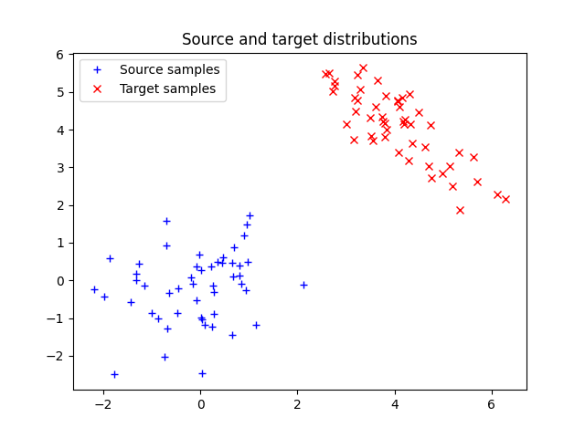
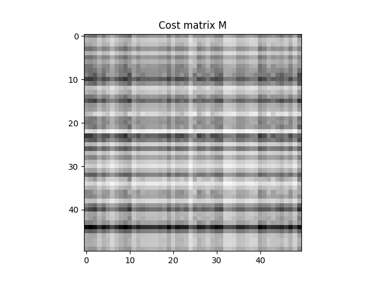
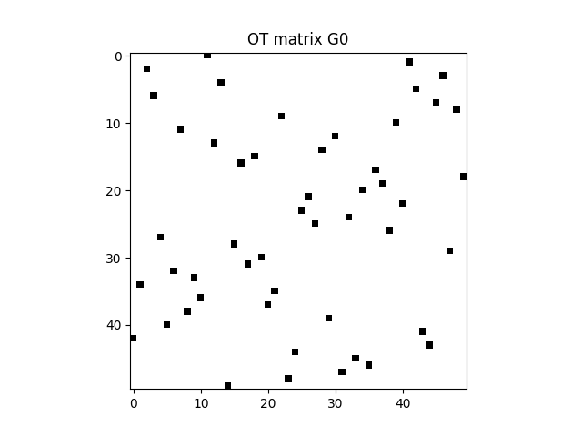
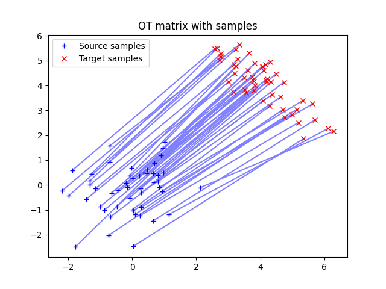
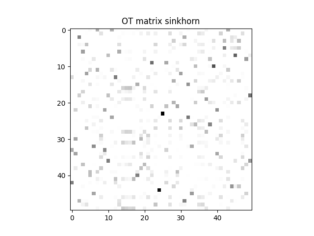
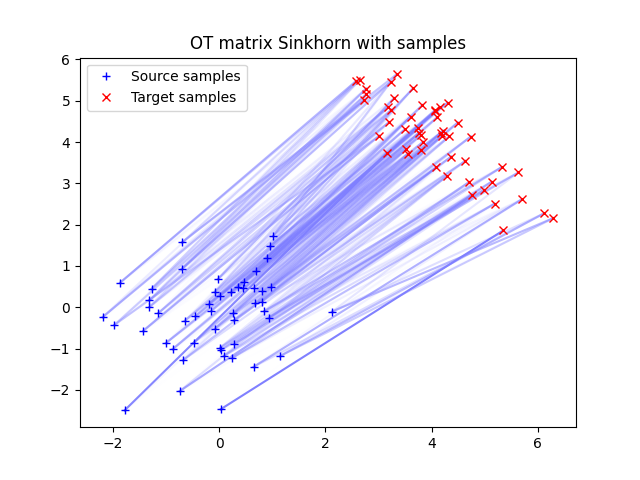
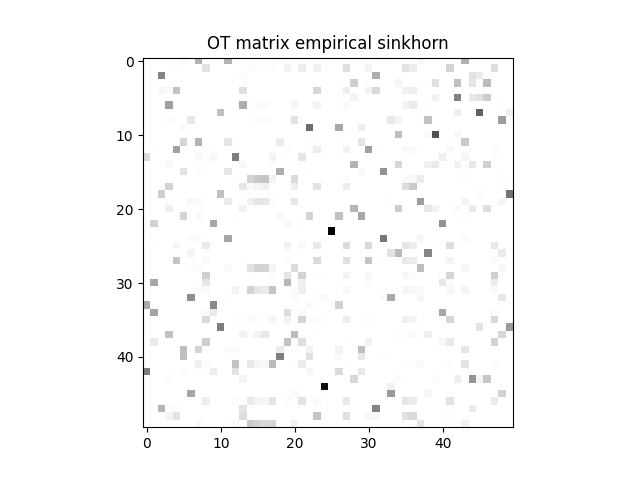

Note
Click here to download the full example code
2D Optimal transport between empirical distributions
Illustration of 2D optimal transport between discributions that are weighted sum of diracs. The OT matrix is plotted with the samples.
# Author: Remi Flamary <remi.flamary@unice.fr>
# Kilian Fatras <kilian.fatras@irisa.fr>
#
# License: MIT License
# sphinx_gallery_thumbnail_number = 4
import numpy as np
import matplotlib.pylab as pl
import ot
import ot.plot
Generate data
n = 50 # nb samples
mu_s = np.array([0, 0])
cov_s = np.array([[1, 0], [0, 1]])
mu_t = np.array([4, 4])
cov_t = np.array([[1, -.8], [-.8, 1]])
xs = ot.datasets.make_2D_samples_gauss(n, mu_s, cov_s)
xt = ot.datasets.make_2D_samples_gauss(n, mu_t, cov_t)
a, b = np.ones((n,)) / n, np.ones((n,)) / n # uniform distribution on samples
# loss matrix
M = ot.dist(xs, xt)
M /= M.max()
Plot data
- 
- 
Out:
Text(0.5, 1.0, 'Cost matrix M')
Compute EMD
G0 = ot.emd(a, b, M)
pl.figure(3)
pl.imshow(G0, interpolation='nearest')
pl.title('OT matrix G0')
pl.figure(4)
ot.plot.plot2D_samples_mat(xs, xt, G0, c=[.5, .5, 1])
pl.plot(xs[:, 0], xs[:, 1], '+b', label='Source samples')
pl.plot(xt[:, 0], xt[:, 1], 'xr', label='Target samples')
pl.legend(loc=0)
pl.title('OT matrix with samples')
- 
- 
Out:
Text(0.5, 1.0, 'OT matrix with samples')
Compute Sinkhorn
# reg term
lambd = 1e-3
Gs = ot.sinkhorn(a, b, M, lambd)
pl.figure(5)
pl.imshow(Gs, interpolation='nearest')
pl.title('OT matrix sinkhorn')
pl.figure(6)
ot.plot.plot2D_samples_mat(xs, xt, Gs, color=[.5, .5, 1])
pl.plot(xs[:, 0], xs[:, 1], '+b', label='Source samples')
pl.plot(xt[:, 0], xt[:, 1], 'xr', label='Target samples')
pl.legend(loc=0)
pl.title('OT matrix Sinkhorn with samples')
pl.show()
- 
- 
Emprirical Sinkhorn
# reg term
lambd = 1e-3
Ges = ot.bregman.empirical_sinkhorn(xs, xt, lambd)
pl.figure(7)
pl.imshow(Ges, interpolation='nearest')
pl.title('OT matrix empirical sinkhorn')
pl.figure(8)
ot.plot.plot2D_samples_mat(xs, xt, Ges, color=[.5, .5, 1])
pl.plot(xs[:, 0], xs[:, 1], '+b', label='Source samples')
pl.plot(xt[:, 0], xt[:, 1], 'xr', label='Target samples')
pl.legend(loc=0)
pl.title('OT matrix Sinkhorn from samples')
pl.show()
- 
Out:
/home/circleci/project/ot/bregman.py:484: RuntimeWarning: divide by zero encountered in true_divide
v = b / KtransposeU
/home/circleci/project/ot/bregman.py:492: UserWarning: Warning: numerical errors at iteration 0
warnings.warn('Warning: numerical errors at iteration %d' % ii)
/home/circleci/project/ot/plot.py:90: RuntimeWarning: invalid value encountered in double_scalars
if G[i, j] / mx > thr:
Total running time of the script: ( 0 minutes 1.882 seconds)